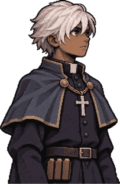
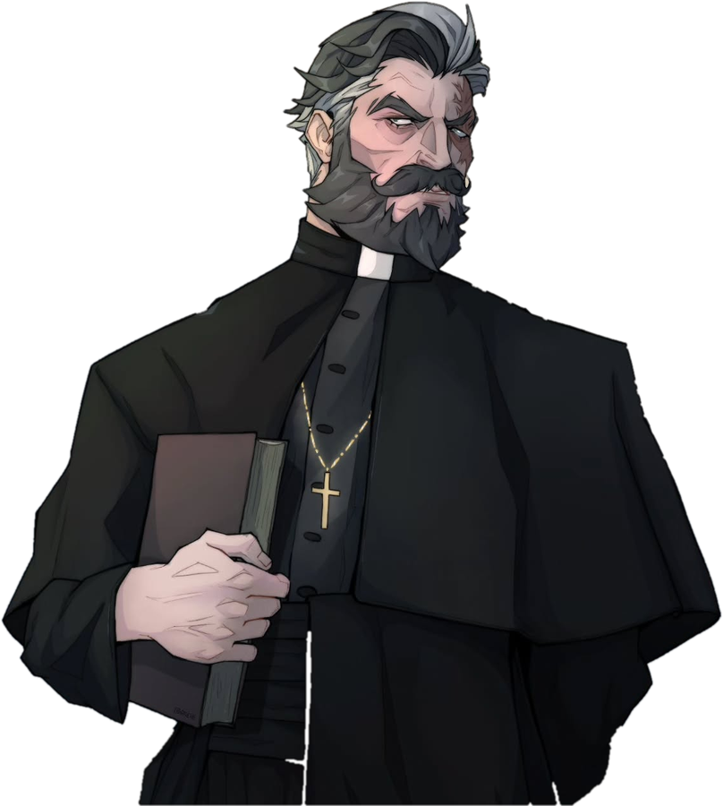

← O Marcado pela Penitência
Prólogo jogável
Prólogo
West Blue
O treino na floresta
Som desligado
Tela cheia
Pausar
Cartuchos
Prólogo · West Blue
O treino na floresta
Começar
→
Recomeçar o treino
Voltar ao livro


Padre Quinn
Continuar →
◀
▶
Usar
Chicote
Tiro
Pular